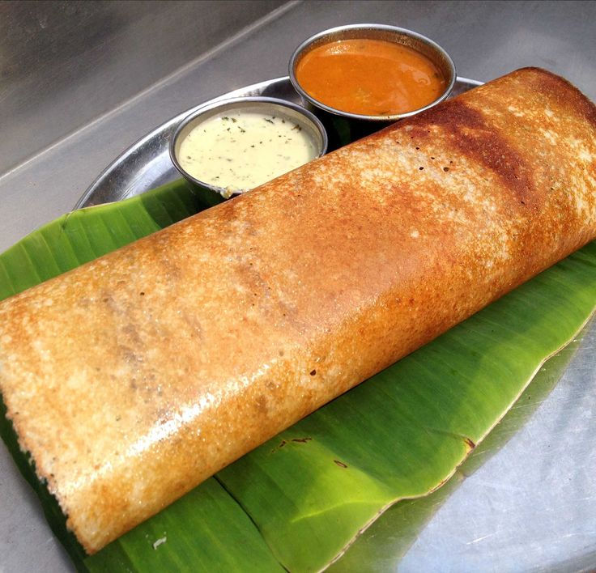
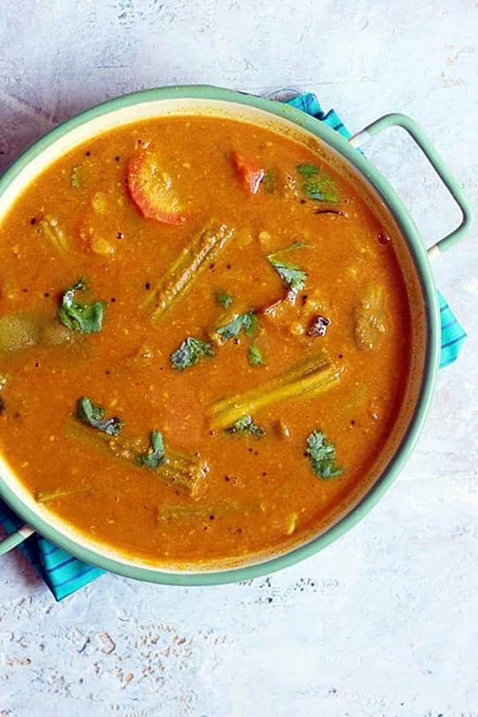

Dosa with Coconut Chutney

Ingredients
- 1 cup Rice
- ½ cup Urad Dal (Split Black Gram)
- 1 tsp Fenugreek Seeds
- Salt to taste
- Oil or Ghee for cooking
- For Coconut Chutney:
- ½ cup Grated Coconut
- 2 tbsp Roasted Chana Dal
- 1 Green Chili
- 1 small piece Ginger
- Salt to taste
- Water as needed
Instructions
- Soak rice, urad dal, and fenugreek seeds for 6 hours. Grind to a smooth batter and ferment overnight.
- Add salt and mix well. Heat a non-stick pan and pour a ladle of batter. Spread in a circular motion.
- Drizzle oil around the edges and cook until golden. Fold and serve hot.
- For Chutney: Blend coconut, roasted chana dal, chili, ginger, and salt with water to make a smooth chutney.
Idli with Tomato Sauce

Ingredients
- 1 cup Rice
- ½ cup Urad Dal (Split Black Gram)
- Salt to taste
- Water as needed
- Oil for greasing
- For Tomato Sauce:
- 2 Tomatoes (chopped)
- 1 Onion (chopped)
- 1 tsp Garlic (minced)
- 1 tbsp Oil
- Salt, Sugar, Chili flakes to taste
Instructions
- Soak rice and urad dal separately for 6 hours. Grind to a thick batter and ferment overnight.
- Add salt and mix well. Pour batter into greased idli molds and steam for 10–12 minutes.
- For Sauce: Heat oil, sauté garlic and onion. Add chopped tomatoes and cook until soft.
- Add salt, sugar, chili flakes and blend into a smooth sauce. Serve warm with soft idlis.
Tasty Sambhar with Rice

Ingredients
- 1 cup Toor Dal (Pigeon Pea)
- 1 Tomato (chopped)
- ½ cup Drumsticks, Carrot, or Brinjal (chopped)
- 2 tsp Sambhar Powder
- ¼ tsp Turmeric
- Salt to taste
- Tamarind pulp (2 tbsp)
- For Tempering:
- 1 tsp Mustard Seeds
- 1 Dried Red Chili
- Curry Leaves
- 2 tsp Oil
- Fresh Coriander for garnish
Instructions
- Pressure cook toor dal with turmeric and enough water until soft. Mash and keep aside.
- In a pan, cook vegetables with a little water until soft. Add sambhar powder, salt, and tamarind pulp.
- Mix cooked dal with vegetables and simmer for 10 minutes.
- For tempering: Heat oil, splutter mustard seeds, red chili, curry leaves, and add to sambhar.
- Garnish with coriander and serve hot with steamed rice.